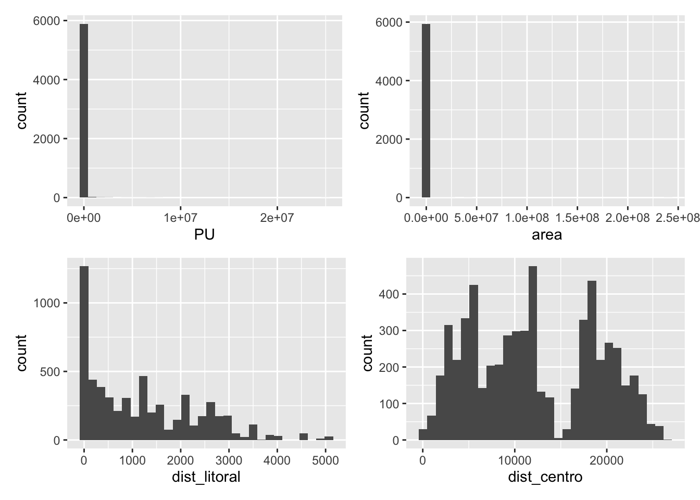
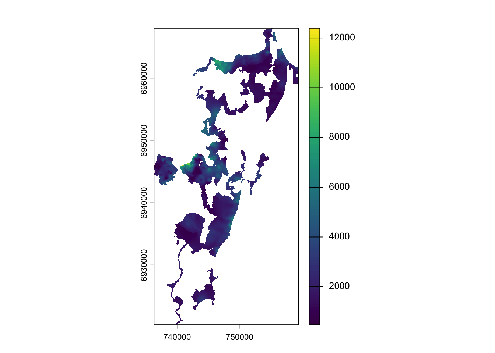

Reading layer `variavel_geografica_setor_censitario' from data source
`/Users/droubi/Documents/LabFSG/POC-FLN/data/4205407_Florianopolis_r006_2026-03-23.gpkg'
using driver `GPKG'
Simple feature collection with 1004 features and 54 fields
Geometry type: MULTIPOLYGON
Dimension: XY
Bounding box: xmin: -48.61347 ymin: -27.85377 xmax: -48.32788 ymax: -27.26797
Geodetic CRS: SIRGAS 20007 Estudos Metodológicos
7.1 Fundamentos da Avaliação em Massa
Segundo CARRANZA et al. (2026), existem diversas abordagens viáveis para a avaliação em massa de imóveis urbanos. CARRANZA et al. (2026) elencam três dessas diferentes abordagens - estimação via algoritmos de Machine Learning, Geoestatística (krigagem) e modelos lineares - e as compara no contexto da América Latina.
Cada uma destas diferentes abordagens possui pontos fortes e fracos. De um lado, segundo CARRANZA et al. (2026), a estimação via modelos lineares tem a vantagem de explicar claramente aos contribuintes como são compostos os valores de mercado estimados, ainda que a performance destes modelos geralmente seja mais baixa na previsão destes valores. De outro lado, os algoritmos de Machine Learning apresentam performance superior, porém falham em explicar ao contribuinte como são formados os valores de mercado. Entre estas duas abordagens citadas situa-se a geoestatística que, segundo CARRANZA et al. (2026), atinge uma performance aceitável, ainda que apresente problemas em identificar barreiras urbanas.
Neste trabalho procurou-se combinar as diferentes abordagens para uma melhor estimação dos valores de mercado. Como será visto ao longo deste capítulo, os algoritmos de Machine Learning, a geoestatística e os modelos lineares foram combinados de maneira que possibilitou a estimação de valores de mercado de maneira suficientemente precisa, sem abrir mão do poder de explicação da formação de valores.
7.1.1 Metodologia
O método adotado para a estimação de valores de mercado neste trabalho é o método evolutivo, método consagrado que estima o valor de mercado de um imóvel através da soma dos seus componentes (terra e capital):
\[V_{\text{Imóvel}} = (V_{\text{Terreno}} + V_{\text{Benfeitorias}})\cdot FC \tag{7.1}\]
Em que:
- \(V_{\text{Imóvel}}\) é o valor de mercado do imóvel acabado;
- \(V_{\text{Terreno}}\) é o valor de mercado do lote sobre o qual o imóvel encontra-se edificado;
- \(V_{\text{Benfeitorias}}\) é o valor do capital aplicado em benfeitorias no imóvel e;
- \(FC\) é um “fator de comercialização” empregado para ajustar a diferença entre o valor real de mercado do imóvel e a diferença entre a soma dos seus componentes.
Como descrito nos Capítulos 5 e 5, para a estimação foram coletados dados de anúncios de imóveis edificados e não-edificados, que foram fortalecidos com variáveis cartográficas para adicionar poder de explicação aos valores de mercado. Procurou-se, durante o processo de estimação, extrair o máximo de informação de todo o conjunto de dados, que envolvem anúncios não apenas de lotes, mas também de casas, apartamentos e outros tipos de imóveis, tanto para a venda quanto para locação.
Os valores de benfeitorias podem ser calculados através dos custos de construção divulgados pelos SINDUSCON locais. Os valores dos terrenos, por outro lado, devem ser estimados via modelos lineares, geoestatística ou algoritmos preditivos de aprendizado de máquina. Para o fator de comercialização, o ideal é que este seja inferido através de dados de mercado de imóveis edificados.
7.1.2 Resultados
7.1.2.1 Análise Exploratória
A análise explotarória de dados foi feita com auxílio do R, versão 4.5.2.

Na Figura 7.1 é possível perceber a presença de forte assimetria nos dados oriundos do observatório do mercado imobiliário (variáveis PUe area), causada pela presença de outliers na amostra.
7.1.2.2 Limpeza dos dados
Os dados foram limpos utilizando-se regressão robusta. O método de regressão robusta escolhido foi o método dos mínimos quadrados ponderados (ver ROUSSEEUW, 1984).
7.1.2.3 Geração da Renda Krigada
Os dados de renda do chefe do domicílio do IBGE foram tratados pela equipe de estimação. Inicialmente foi gerada a variável renda per capita, obtida conforme a Equação 7.2:
\[R_{\text{per capita}} = \frac{R_{\text{chefe dom.}}}{N} \tag{7.2}\]
Em que:
- \(R_{\text{chefe dom.}}\) é a renda do chefe do domicílio divulgada pelo censo 2022 (IBGE);
- \(N\) é o número de pessoas por domicílio, também divulgada pelo IBGE.
Na Figura 7.2 pode ser visualizado o resultado da krigagem da variável \(R_{\text{per capita}}\) para o município de Florianópolis.

7.1.2.4 Ajuste do modelo de imóveis edificados
Após a limpeza dos dados, foi executado o processo de classificação dos dados segundo o padrão construtivo. Os dados foram agrupados em três padrões construtivos, a saber, padrão baixo, normal e alto, conforme descrito na Seção 6.4.1.
Então, foi ajustado um modelo de regressão linear múltipla para descrever o comportamento do mercado imobiliário de casas e apartamentos em Florianópolis ver 6.5.1.
7.1.2.5 Geração da superfície de VU de m2 construído
Após o ajuste do modelo de mínimos quadrados ordinários, os dados da amostra utilizados para o ajuste do modelo foram homogeneizados de acordo com fatores de homogeneização estimados diretamente do modelo. Por exemplo, para a variável área, foi derivado o fator área, conforme a Equação 7.3:
\[F_{\text{Área}} = \left ( \frac{A_\text{imóvel}}{100} \right)^{-0,25} \tag{7.3}\]
Veja Note 7.2 para entender com é feita a derivação racional de fatores de homogeneização.
Após o procedimento de homoegeneização, foi gerada uma superfície de valores de metro quadrado construído com os dados homogeneizados através do algoritmo IDW (inverse distance weighting).
Nota 7.1: Inverse Distance Weighting
Segundo DRUCK et al. (2004, p. 83), “uma alternativa simples para gerar uma superfície bidimensional” consiste em ajustar uma função bidimensional sobre as amostras, prevendo valores em uma grade (\(\hat z_i\)), com a seguinte formulação:
\[ \hat z_i = \frac{\sum_{j = 1}^n w_{ij}z_j}{\sum_{j=1}^n w_{ij}} \tag{7.4}\]
Em que:
- \(z_j\) é o valor da cota (VU) de uma amostra vizinha do ponto \(i\) da grade;
- \(w_{ij}\) é um fator de ponderação.
Com base neste esquema básico supra-mencionado, é possível gerar vários interpoladores (vizinho mais próximo, média simples ou média ponderada). A ponderação mais usada consiste em adotar pesos que variam com o inverso de uma potência \(k\) da distância euclidiana do ponto da amostra ao ponto da grade em que se deseja prever valores (\(d_{ij}\)), assim:
\[ w_{ij} = \frac{1}{d_{ij}^k} \tag{7.5}\]
Em que: - \(d_{ij} = \sqrt{(x_i-x_j)^2 + (y_i - y_j)^2}\)
Nota 7.2: Derivação Racional de Fatores
A derivação racional de fatores de homogeneização é feita de acordo com os coeficientes estimados em um modelo de regressão linear múltipla (RLM).
Os fatores serão aditivos quando o modelo RLM for ajustado na escala de preços unitários (PU), ou serão multiplicativos quando o modelo RLM for ajustado com a transformação da variável dependente para a escala logaritmica, o que é usual na Engenharia de Avaliações.
Para entender, basta perceber que, para um modelo ajustado na escala logaritmica, tem-se:
\[\widehat{\log(PU)} = \hat \beta_0 + \hat \beta_1 x_1 + \ldots + \hat\beta_kx_k \tag{7.6}\]
Efetuando a exponenciação em ambos os lados de Equação 7.6, tem-se:
\[\widehat{PU} = \exp(\hat \beta_0 + \hat \beta_1 x_1 + \ldots + \hat\beta_kx_k) \tag{7.7}\]
Como a exponencial da soma é o produto das exponenciais, a Equação 7.7 torna-se:
\[\widehat{PU} = \exp(\hat \beta_0)\cdot\exp(\hat \beta_1 x_1)\cdot \ldots \cdot \exp(\hat\beta_kx_k) \tag{7.8}\]
Donde entende-se o motivo dos fatores derivados com este modelo serem multiplicativos, pois, deste modelo, deduz-se:
\[F_1 = \exp(\hat \beta_1 x_1); F_2 = \exp(\hat \beta_2 x_2); \ldots ; F_k = \exp(\hat\beta_kx_k)\]
7.1.2.6 Ajuste do modelo de lotes
Com a superfície de valores de metro quadrado construído elaborada conforme descrito na Seção 7.1.2.5.
7.1.2.7 Geração da superfície de valores unitários de lotes
A superfície de valores unitários de lotes urbanos foi obtida através de um procedimento geoestatístico denominado krigagem ordinária, que interpola valores de uma amostra a uma grade regular de pontos.
Primeiramente, os preços unitários da amostra de lotes foram homogeneizados conforme procedimento descrito na Note 7.2, a partir do modelo final de lotes obtido (ver Tabela 6.3 no Capítulo 6), criando assim o que se denomina em geoestatística como variável regionalizada. Depois, estes preços unitários homogeneizados foram
7.2 Conexão com Normas Técnicas
A avaliação em massa de imóveis urbanos ainda é matéria pendente de normatização na Associação Brasileira de Normas Técnicas (ABNT). A norma técnica brasileira existente de avaliação em massa de imóveis foi elaborada em conjunto por duas importantes entidades profissionais, a saber, o Instituto Brasileiro de Avaliações e Perícias de Engenharia (IBAPE ) e a Sociedade Brasileira de Engenharia de Avaliações (SOBREA). Este texto normativo, no entanto, ainda carece de força legal. Uma comissão da ABNT, portanto, tem discutido, com base neste texto normativo existente, a criação de um volume adicional para a NBR 14.653, que irá contemplar especificamente a matéria da avaliação em massa de imóveis urbanos para fins tributários.
7.3 Lições aprendidas na PoC
Os procedimentos metodológicos adotados na PoC tiveram que ser adaptados à realidade fática brasileira, em que o cadastro urbano de imóveis ainda pende de um grande processo de desenvolvimento. Inexiste uma solução única e eficaz que permita a definição do valor de referência dos imóveis de uma determinada região de forma inequívoca. Pelo contrário, uma solução viável deve ser buscada para cada caso, dependendo das informações geográficas e mercadológicas existentes.
A PoC Florianópolis foi importante especialmente para o aprendizado de como os fluxos de atividades das diversas etapas podem ser replicados em cada localidade ao longo do projeto, ainda que inexista garantia de que este fluxo manter-se-á eficaz em todas as localidades e ao longo do tempo. No entanto, ainda que adaptações porventura mostrem-se necessárias ao longo do projeto, a definição de um fluxo inicial replicável é o principal resultado obtido com a PoC Florianópolis.